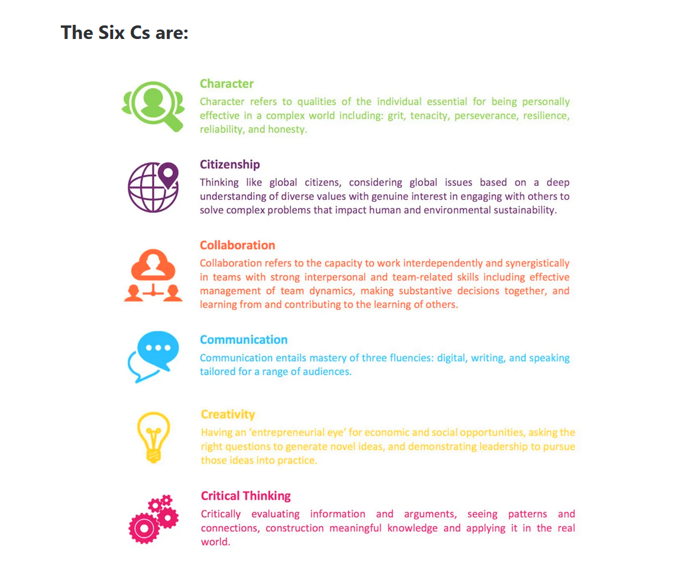
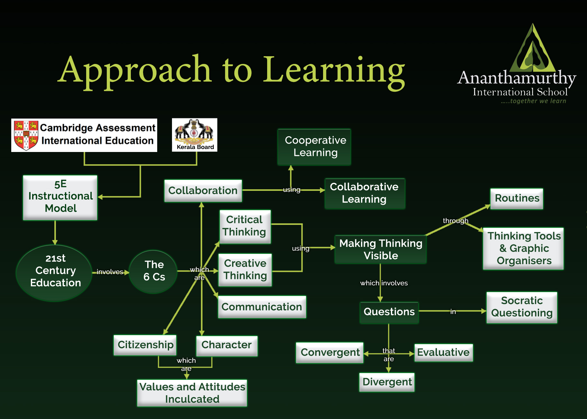

Home › Learning
Cambridge rigour, Kerala roots, and 21st-century skills — all under one roof.
Curriculum Pathway
KG-1 (3–4) and KG-2 (4–5)
Cambridge Stages 1–6
Cambridge Stages 7–9
Through the Stage 6 checkpoint, Cambridge learning is blended with National and Kerala State curriculum topics, including social science focused on Kerala and India.
What We Teach
Framework
Six core competencies embedded in every lesson — essential for college, career, and life.
Analysing, questioning, and solving problems with reason.
Imagining new possibilities and expressing ideas in fresh ways.
Working effectively with others towards shared goals.
Expressing ideas clearly and listening with understanding.
Responsibility towards community, society, and the environment.
Integrity, resilience, empathy, and ethical grounding.

Teaching Methodology
The school has mostly adopted the 5E Instructional Model, using varied experiences to help students construct understanding.
Hook curiosity. Connect to prior knowledge.
Hands-on investigation and discovery.
Build understanding through discussion.
Apply knowledge to new situations.
Reflect on what was learned and how.
